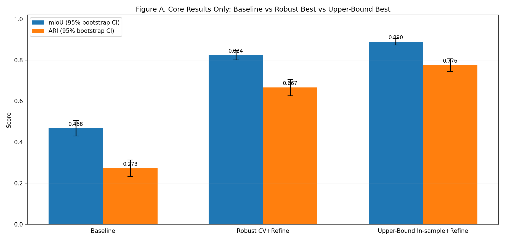
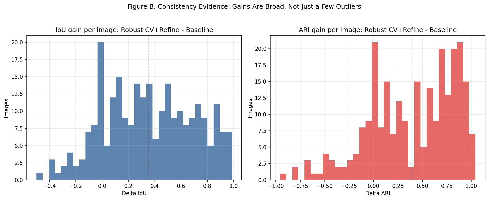
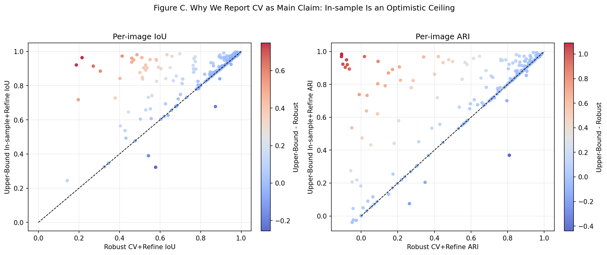
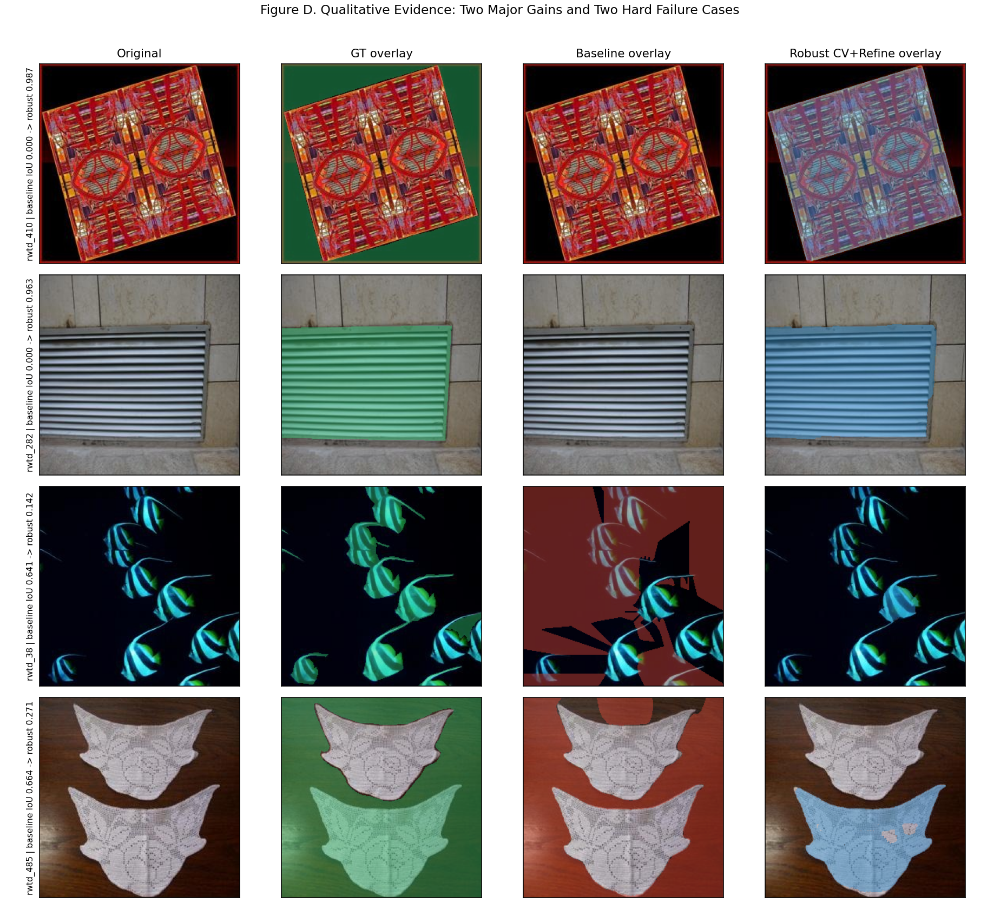

TextureSAM Baseline
mIoU 0.467954
ARI 0.273033
RWTD Kaust256 | Conference-Oriented Narrative
This page intentionally focuses on one clean story: baseline failure mode, principled method, robust result, and confidence evidence.
mIoU 0.467954
ARI 0.273033
mIoU 0.823782
ARI 0.666729
mIoU 0.889516
ARI 0.776114
Main claim uses the robust grouped-CV result. In-sample is reported as an optimistic ceiling, not as deployment evidence.
Research question: Can we convert high-recall but fragmented SAM texture proposals into one coherent binary mask without overfitting to RWTD?
Incentive: RWTD scoring penalizes fragmentation heavily (especially ARI), so good coverage alone is insufficient.
Intuition: keep proposal diversity, then enforce coherence with texture-aware consolidation and robust candidate selection.
Baseline masks fragment texture regions; boundaries and region consistency are unstable.
Texture-aware merge + global coherence objective + learned reranking over diverse proposal banks.
Use GroupKFold CV + held-out scoring for the main claim; keep in-sample as upper-bound only.
Robust result vs baseline: +0.3558 mIoU and +0.3937 ARI.
Improvements are broad across images, not concentrated in a few cherry-picked examples.
The key contribution is solving texture-region coherence, not benchmark-specific tuning tricks.
After the exploratory reranker track, we added a strict protocol track where external learning uses PTD only and RWTD labels are used only once for final scoring.
| Method | mIoU | ARI | Delta mIoU vs baseline | Delta ARI vs baseline |
|---|---|---|---|---|
| TextureSAM baseline (v5) | 0.467954 | 0.273033 | +0.000000 | +0.000000 |
| TextureSAM-v2 strict handcrafted | 0.655111 | 0.296329 | +0.187156 | +0.023296 |
| TextureSAM-v2 strict PTD learned | 0.717714 | 0.376768 | +0.249759 | +0.103735 |
Strict PTD-v2 details, per-image compare, and leakage statement are published in the strict page.
| Component | What it does | Why it improves generalization |
|---|---|---|
| Texture-aware consolidation | Merge adjacent mask fragments using texture similarity, weak boundary cues, and heterogeneity penalty; pick one coherent component with a global objective. | Targets the structural failure mode (fragmentation) directly, independent of any single prompt template. |
| Multi-bank proposal pooling | Pool prompt masks from complementary upstream runs (v2/v3/v4/v5) plus run-level unions. | Increases proposal diversity so final selection is less brittle to one generator style. |
| Robust reranker + edge refine | Train candidate-quality model with GroupKFold CV; choose top candidate, then apply edge-aware refinement. | CV protects against same-image overfitting; refinement improves boundary fidelity in a model-agnostic way. |
Global selection objective: S(C) = Delta(in,out) - lambda * Var(C) - mu * Frag(C).

Only baseline, robust main claim, and upper-bound are shown to keep the narrative clean.
| Method | mIoU | ARI | Role in claim |
|---|---|---|---|
| TextureSAM Baseline | 0.467954 | 0.273033 | Reference point |
| TextureSAM-2 Robust (CV + Refine) | 0.823782 | 0.666729 | Main result (deployment-facing) |
| TextureSAM-2 Upper-Bound (In-sample + Refine) | 0.889516 | 0.776114 | Optimistic ceiling |

Robust method improves IoU on 209/256 images and ARI on 204/256 images versus baseline.

In-sample remains above CV on many images, which is expected; this is why CV is used as the main claim.

We include both strong wins and hard failures to show realistic behavior rather than cherry-picked success.

Additional ablations and intermediary experiments (descriptor variants, broader sweeps, archived method variants) are kept for reproducibility, but not used as main claim figures. This avoids presenting a benchmark-tuned narrative.
cd /home/galoren/TextureSAM-v2
# Robust main result
python3 scripts/run_multibank_reranker.py \
--rwtd-root /home/galoren/rwtd_partition_nonsam/data/rwtd_kaust256 \
--proposal-root /home/galoren/rwtd_miner_public_site/texow_sam_vlm_freeform_rwtd_v2/predictions/prompt_masks \
--proposal-root /home/galoren/rwtd_miner_public_site/texow_sam_vlm_freeform_rwtd_v3_scan/predictions/prompt_masks \
--proposal-root /home/galoren/rwtd_miner_public_site/texow_sam_vlm_freeform_rwtd_v4_qwen3/predictions/prompt_masks \
--proposal-root /home/galoren/rwtd_miner_public_site/texow_sam_vlm_freeform_rwtd_v5_qwen3_multiscale_attr/predictions/prompt_masks \
--mode cv --cv-folds 5 \
--n-estimators 500 --max-depth 18 --min-samples-leaf 2 \
--apply-refine --refine-iters 2 --refine-min-area 50 \
--out-dir /home/galoren/TextureSAM-v2/reports/reranker_cv_refined
# Upper-bound reference (not main claim)
python3 scripts/run_multibank_reranker.py \
--rwtd-root /home/galoren/rwtd_partition_nonsam/data/rwtd_kaust256 \
--proposal-root /home/galoren/rwtd_miner_public_site/texow_sam_vlm_freeform_rwtd_v2/predictions/prompt_masks \
--proposal-root /home/galoren/rwtd_miner_public_site/texow_sam_vlm_freeform_rwtd_v3_scan/predictions/prompt_masks \
--proposal-root /home/galoren/rwtd_miner_public_site/texow_sam_vlm_freeform_rwtd_v4_qwen3/predictions/prompt_masks \
--proposal-root /home/galoren/rwtd_miner_public_site/texow_sam_vlm_freeform_rwtd_v5_qwen3_multiscale_attr/predictions/prompt_masks \
--mode in_sample \
--n-estimators 900 --max-depth 24 --min-samples-leaf 1 \
--apply-refine --refine-iters 2 --refine-min-area 50 \
--out-dir /home/galoren/TextureSAM-v2/reports/reranker_in_sample_refined